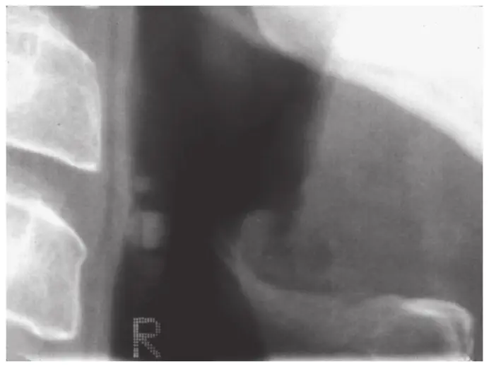

نسخه استخراجشده؛ ترجمه یا تأیید علمی انجام نشده است. وضعیت: captured
آقای ۵۸ سالهای برای جرمگیری آمده. سیگار میکشد و فشار خونش بالاست. در شرح حال میگوید: «وقتی از پلهها بالا میروم قفسهی سینهام سنگین میشود و با کمی ایستادن خوب میشوم.» این جمله برای برنامهی درمانت چه معنایی دارد؟
او به احتمال زیاد بیماری ایسکمیک قلب دارد. پلاک آترواسکلروز رگهای کرونر را تنگ میکند. وقتی نیاز عضلهی قلب به اکسیژن از خونرسانی بیشتر شود، درد ایسکمیک میآید.
در مطبی با حدود ۲۰۰۰ بیمار، دستکم ۱۰۰ نفر این بیماری را دارند. اقدام حاد در درد قفسهی سینه را در اورژانسهای قلبی دیدی؛ اینجا یاد میگیری این بیمار را کی و چطور درمان کنی.
برای شناختن آنژین ناپایدار بپرس: «درد در استراحت یا در خواب هم میآید؟» پاسخ مثبت نشانهی بدی است.

درد ایسکمیک ممکن است به شانه، بازو، گردن، فک پایین و حتی دندانها تیر بکشد. درد دندانی که با فعالیت میآید و با استراحت میرود، به منشأ قلبی اشاره دارد. زنان کمتر از درد قفسهی سینه میگویند و بیشتر از خستگی، تنگی نفس یا سوزش سر دل.
نکتهی طلایی: کلسیفیکاسیون کاروتید در رادیوگرافی پانورامیک، کنار مهرههای C3 و C4، نشانگر خطر MI و سکتهی مغزی در آینده است. بیمار را برای بررسی به پزشک ارجاع بده.